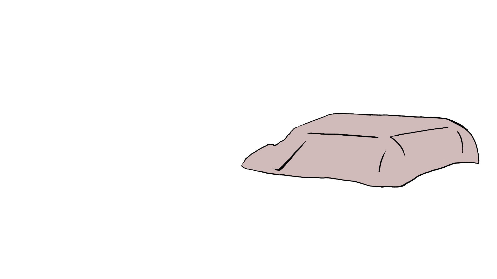
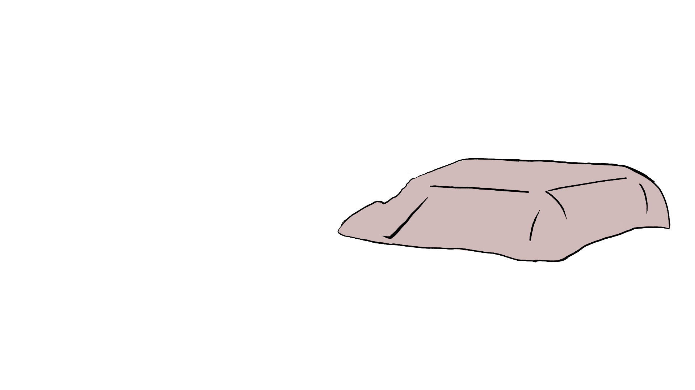
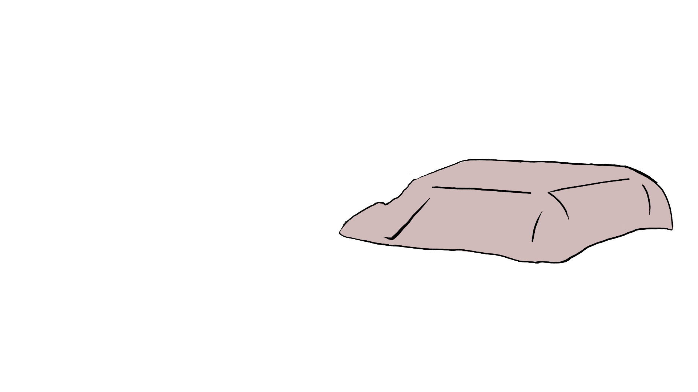
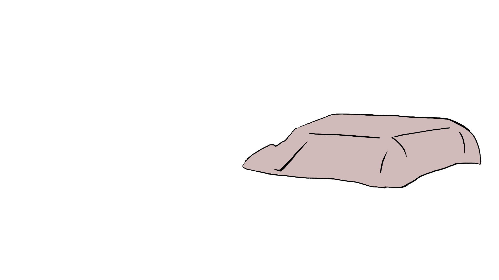

'A Piece of Dreamy Cake' was a story that Ons shared with us - a childhood nightmare about being stuck in a room with a cake that progressively grew larger. As a claustrophobic kid, this was quite a stressful experience for Ons, whereas the rest of the group (as adults) found the story quite amusing. Here, we came up with an idea to divide one seemingly straightforward story into two different perspectives. The leading thread is illustrated through monochrome drawings, calling for questions and curiosity. When the user hovers on one side of the screen, they open a colored, pre-imagined angle on the story. The one on the left exemplifies how a child would have reacted in this dream; dramatic and fearful, it is an adventurous story featuring heroes and strong emotions. On the right, we have visualized an adult’s attitude in this situation; indifferent and somewhat boring, the drama is dissolved by transforming the horrifying into the mundane.
Together with our team, we created new dimensions to Ons’ dream by designing new characters, storylines and themes. This comic immerses the viewer into a polysemic and interactive setting, open to interpretation.